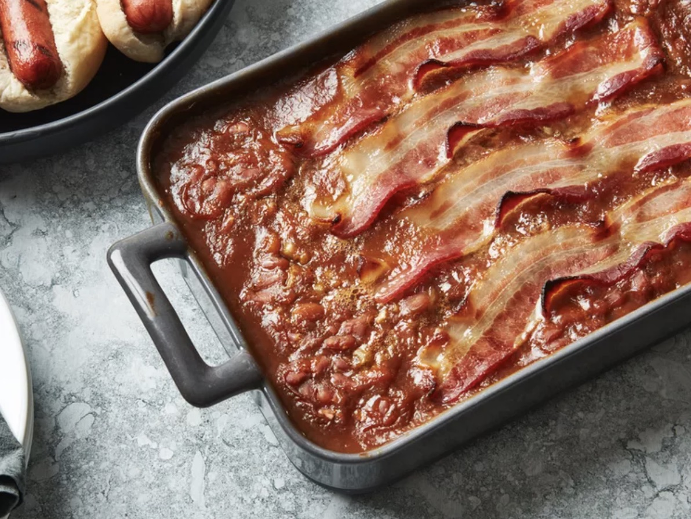

Baked Beans

Description
Tangy, sweet, old-fashioned baked beans are made the easy way using canned beans. This is my grandma's favorite semi-homemade recipe. She makes it every Thanksgiving, and we usually end up scraping the pan clean! There are never any leftovers.
Ingredients
- 2 (28 ounce) cans baked beans
- 1 small onion, chopped
- 3 tablespoons pancake syrup
- 2 tablespoons brown sugar
- 2 tablespoons ketchup
- 2 teaspoons prepared yellow mustard
- 4 slices bacon
Steps
- Gather the ingredients. Preheat the oven to 350 degrees F (175 degrees C).
- Stir together baked beans, onion, syrup, brown sugar, ketchup, and mustard in a large bowl.
- Pour into a 9x13-inch baking dish. Lay bacon slices across the top.
- Bake in the preheated oven until the bacon is browned and the beans have thickened, 35 to 40 minutes.